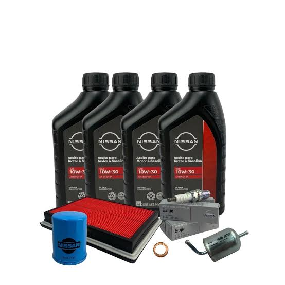
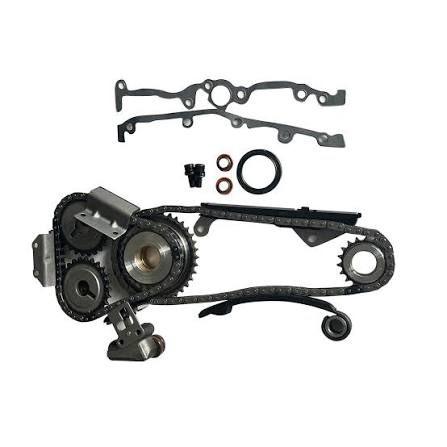
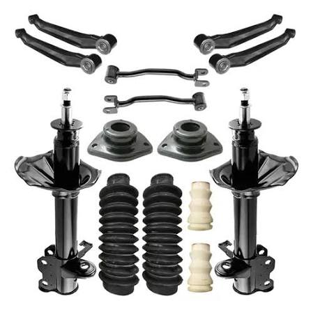
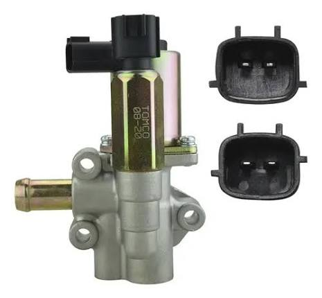
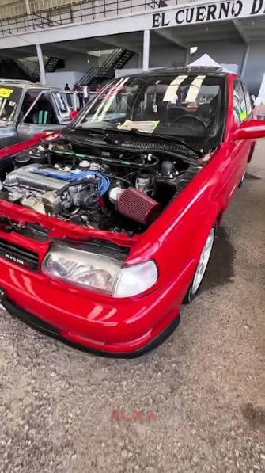
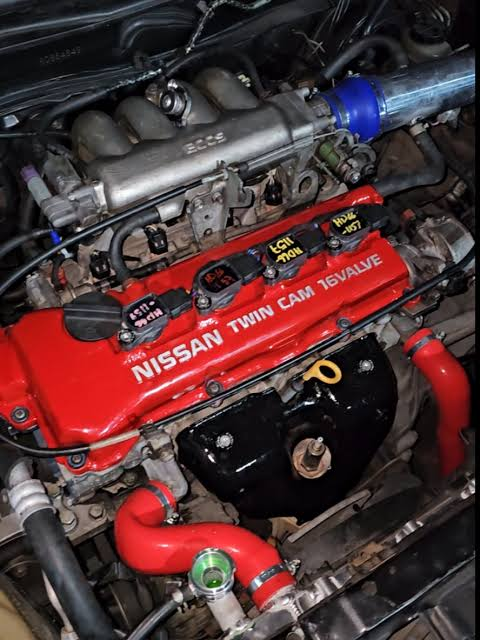
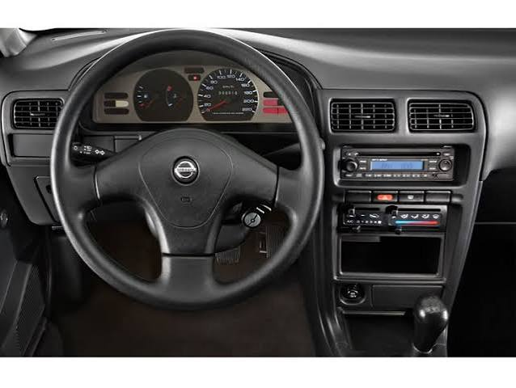
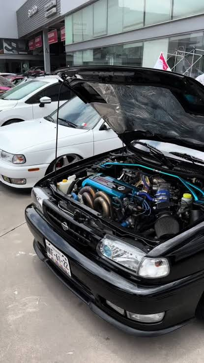
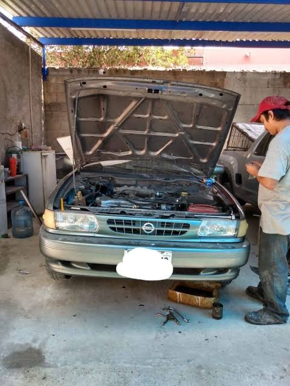

Especialistas en diagnóstico, afinación, restauración y refacciones originales y OEM para Nissan Tsuru V16, GSR 2000 y GS1.

Bujías de iridio, filtros de aire, aceite y gasolina, además de limpieza de cuerpo de aceleración para Nissan Tsuru V16 y GS1.
Cotizar - $650 MXN
Repuesto completo de distribución para motor GA16DE con guías reforzadas y calibración de tiempo en Nissan Tsuru V16 y GSR 2000.
Cotizar - $1,450 MXN
Horquillas, bujes, rótulas y amortiguadores para estabilidad y dirección firme en Nissan Tsuru GSR 2000, V16 y GS1.
Cotizar - $1,890 MXN
Sensor IAC, TPS y de oxígeno con escaneo de códigos para marcha mínima estable y mejor consumo en Nissan Tsuru.
Cotizar - $980 MXN
Paquete integral de restauración mecánica y estética para Nissan Tsuru V16, GSR 2000 y GS1 con revisión de compresión, admisión y tren motriz.
Ordenar ahora



Av. de los Talleres 142
Jiquipilco, Estado de México
México
Teléfono: +52 712 345 6789
Email: contacto@tsurutaller.com